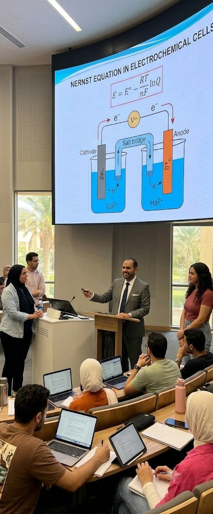
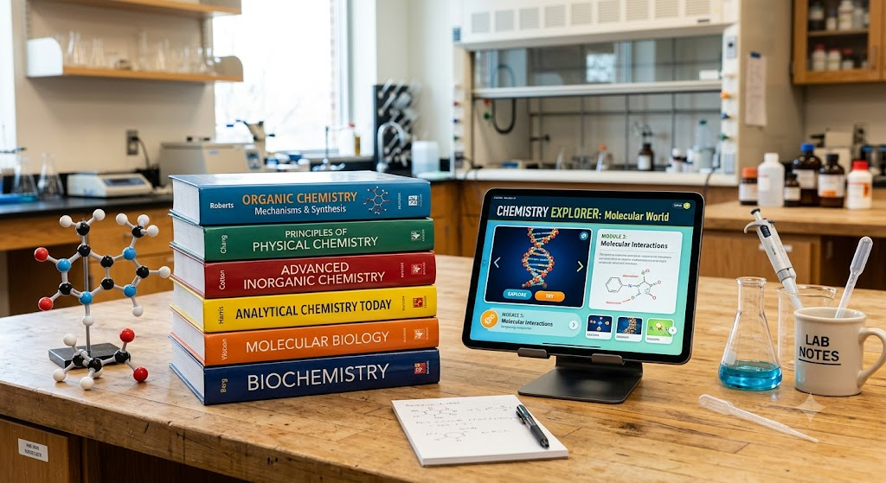
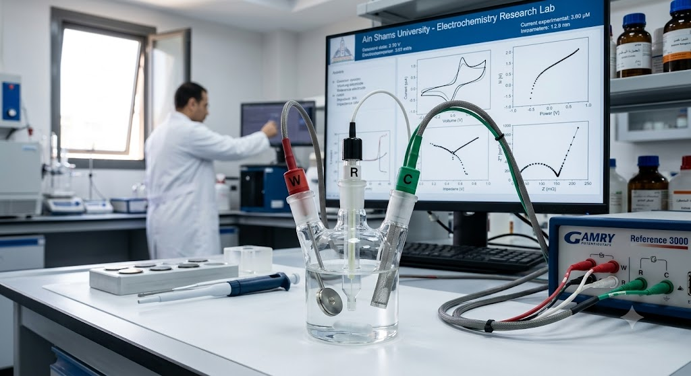
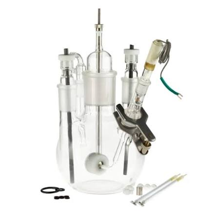
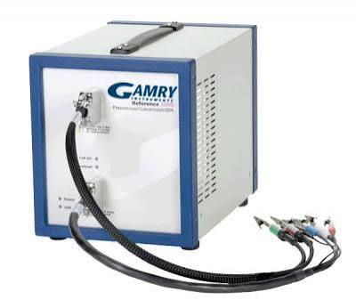
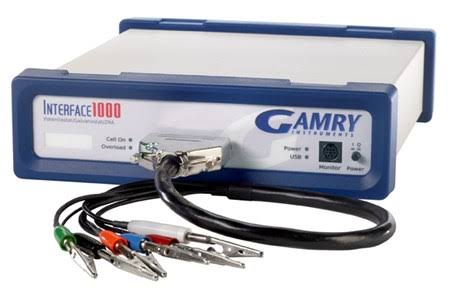

01
أساس علمي راسخStrong Foundations
بناء فهم واضح للمفاهيم والمعادلات قبل الانتقال إلى التطبيقات.
Building conceptual and mathematical understanding before application.
Professor of Physical Chemistryأستاذ الكيمياء الفيزيائية
Ain Shams University · Cairo, Egyptجامعة عين شمس · القاهرة، مصر
Expert advice in corrosion, materials and electrochemistry.استشارات متخصصة في التآكل والمواد والكيمياء الكهربية.
Electrochemical testing, characterization and data interpretation.الاختبارات الكهروكيميائية والتوصيف وتفسير البيانات.
DFT, molecular modelling and inhibitor evaluation.DFT والنمذجة الجزيئية وتقييم المثبطات.
Professional and academic specialist training.تدريب مهني وأكاديمي متخصص.
Research partnerships and applied projects.شراكات بحثية ومشروعات تطبيقية.
Submit your request and receive a prompt response.أرسل طلبك لتلقي استجابة سريعة.
التدريس والمقررات والموارد التعليميةTeaching, Courses & Educational Resources
تمتد الخبرة التعليمية للأستاذ الدكتور خالد فؤاد خالد عبر مجالات مترابطة في الكيمياء الفيزيائية والكيمياء الكهربية وعلوم التآكل والكيمياء الحاسوبية. ويقوم المنهج التعليمي على الانتقال من المبادئ الأساسية إلى تفسير الظواهر العملية، مع توظيف القياسات المعملية وتحليل البيانات والنماذج النظرية لبناء فهم علمي متكامل.
Prof. Dr. Khaled Fouad Khaled’s educational experience spans interconnected areas of physical chemistry, electrochemistry, corrosion science, and computational chemistry. His approach moves from fundamental principles to practical interpretation, integrating laboratory measurements, data analysis, and theoretical models.

الفلسفة التعليميةTeaching Philosophy
بناء فهم واضح للمفاهيم والمعادلات قبل الانتقال إلى التطبيقات.
Building conceptual and mathematical understanding before application.
ربط التفسير العلمي بالقياسات والبيانات وقابلية التكرار.
Connecting scientific interpretation with measurement, data, and reproducibility.
تحليل النتائج ومناقشة الفرضيات ومصادر الخطأ والبدائل.
Analysing results, assumptions, sources of error, and alternatives.
الاستخدام المسؤول للمصادر والبيانات والكتابة العلمية.
Responsible use of sources, data, and scientific writing.
مجالات تعليمية مرتبطة بالتخصصTeaching Areas Related to Expertise
المؤلفات التعليمية الرقميةDigital Educational Publications
يشير السجل الأكاديمي إلى مجموعة من المؤلفات الرقمية المنشورة عبر منصة Apple، تغطي التحليل المعملي والكيمياء الكهربية والحركية والكيمياء النووية وعلوم التآكل. تُراجع الروابط وصور الأغلفة وبيانات النشر قبل إتاحتها للزائر.
The academic record identifies a collection of digital publications formerly listed through Apple, covering laboratory analysis, electrochemistry, kinetics, nuclear chemistry, and corrosion science. Links, covers, and publication details are reviewed before public release.

مذكرات معمل الكيمياء: التحليل النوعي غير العضوي.
Laboratory notes on inorganic qualitative analysis.
مذكرات معمل الكيمياء: التحليل الحجمي.
Laboratory notes on volumetric analysis.
مذكرات تعليمية في مبادئ الكيمياء الكهربية.
Educational notes on electrochemical principles.
مذكرات تعليمية في الحركية الكيميائية.
Educational notes on chemical kinetics.
مذكرات تعليمية في الكيمياء النووية.
Educational notes on nuclear chemistry.
مجموعة من التجارب الكيميائية التعليمية المبسطة.
A collection of accessible educational chemistry experiments.
تبسيط علوم التآكل: المجلد الأول — مقدمة.
An introductory volume in the Corrosion Science Made Easy series.
المجلد الثاني — الديناميكا الحرارية.
Volume two — thermodynamics.
المجلد الثالث — الحركية.
Volume three — kinetics.
المجلد الرابع — صور التآكل، الجزء الأول.
Volume four — forms of corrosion, part one.
المجلد الخامس — صور التآكل.
Volume five — forms of corrosion.
المجلد السادس — الوقاية من التآكل.
Volume six — prevention of corrosion.
يمثل هذا العمل نموذجًا لتوظيف التقنيات الرقمية في تعليم الكيمياء المعملية؛ إذ جمع بين كتاب تفاعلي ومواد تعليمية مصورة ضمن بيئة تعلم مدمج، بهدف دعم استعداد الطلاب قبل النشاط المعملي وتعزيز مشاركتهم أثناء التعلم. تناولت الدراسة تطبيق النموذج وتجربة الطلاب واتجاهاتهم نحوه.
This work illustrates the use of digital tools in chemistry laboratory education by combining an interactive book with instructional videos in a blended-learning environment. It addressed implementation as well as students’ experience and perceptions of the approach.
Moroccan Journal of Chemistry · 2017 · 5(3) · 417–424
دليل المقرراتCourse Directory
تُضاف المقررات بعد توفير تكليف التدريس أو الجدول أو توصيف المقرر. ويمكن للمالك استخدام الأدوات المحلية لإضافة البطاقات وتحريرها.
Courses are added after an official teaching assignment, schedule, or course specification is available. The owner can use the local tools to add and edit cards.
منهجية التعلمTeaching and Learning Approach
تحديد المعرفة والمهارات المستهدفة.
Clarify intended knowledge and skills.
شرح المبادئ باستخدام أمثلة ومسائل.
Explain principles through examples and problems.
تجارب أو بيانات أو نماذج بحسب طبيعة الموضوع.
Use experiments, data, or models as appropriate.
تقييم مرتبط بالنواتج وملاحظات تساعد على التحسن.
Outcome-aligned assessment and constructive feedback.
التعليم المعمليLaboratory Education
يشمل التدريب المعملي السلامة، وتحضير العينات والمحاليل، وتصميم الخلية الكهروكيميائية، والتعامل المنهجي مع الأجهزة، وفحص جودة البيانات وتحليل المنحنيات وتوثيق خطوات العمل.
Laboratory training covers safety, sample and solution preparation, electrochemical-cell design, systematic instrument use, data-quality checks, curve analysis, and clear documentation.




جودة التعليم والتطوير الأكاديميEducational Quality and Academic Development
يشير السجل إلى المشاركة في أنشطة مرتبطة بضمان الجودة والاعتماد، وتطوير الدراسات العليا، وتكنولوجيا التعليم، والتوعية البيئية، والإعداد الأكاديمي والمهني للمعلم. تُراجع طبيعة الدور والجهة والتاريخ قبل إضافة كل مشاركة تفصيلية.
The record indicates participation in activities related to quality assurance and accreditation, postgraduate development, educational technology, environmental awareness, and teacher preparation. Role, institution, and date are reviewed before detailed publication.
مشاركة في فعاليات تطوير جودة التعليم العالي وفق السجل.
Participation in higher-education quality initiatives as recorded.
مساهمة ضمن فرق مشروعات تعليمية؛ وتُحدد المسؤوليات بعد التحقق.
Contributions within educational project teams; responsibilities require verification.
أنشطة مرتبطة بتكنولوجيا التعليم والمهارات الأكاديمية والمهنية.
Activities related to educational technology and academic and professional skills.
مستندات التحققVerification Documents
التكليفات والجداول وتوصيفات المقررات.
Assignments, schedules, and course specifications.
صور الأغلفة والبيانات وروابط الناشر المحدّثة.
Covers, bibliographic details, and updated publisher links.
الشهادات والبرامج الرسمية قبل اعتماد المسميات والأدوار.
Certificates and official programmes before confirming titles and roles.
Contact & Collaborationالتواصل والتعاون
Use the dedicated contact page for verified contact details, academic profiles and the WhatsApp enquiry form.استخدم صفحة التواصل المخصصة للاطلاع على بيانات الاتصال الموثقة والملفات الأكاديمية ونموذج الاستفسار عبر واتساب.